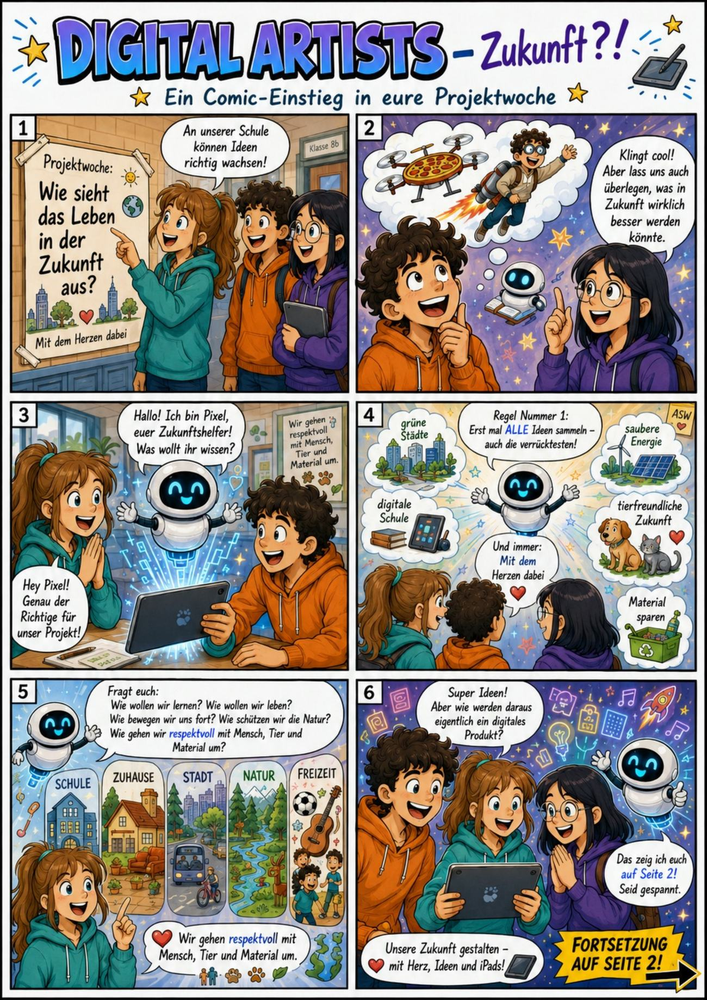
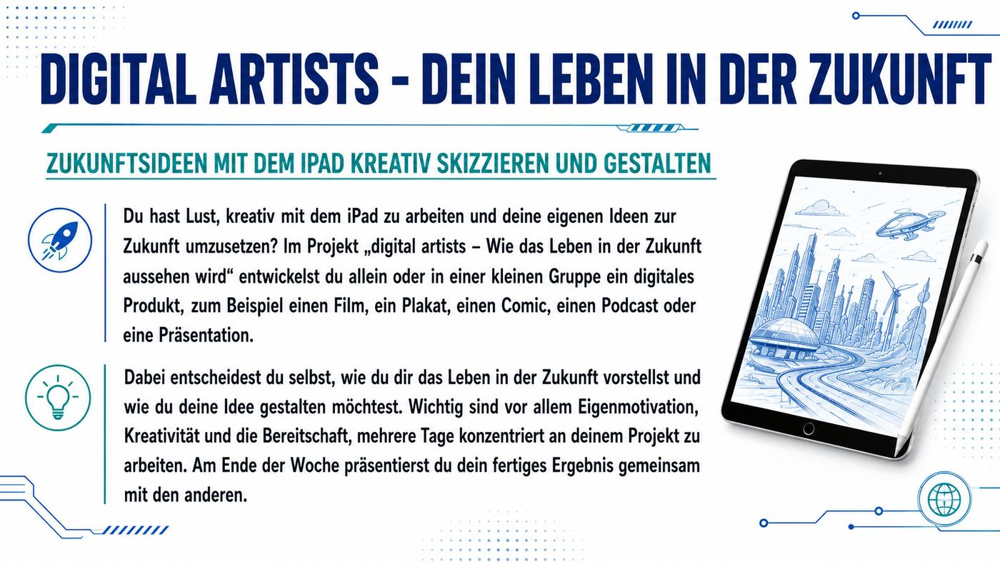
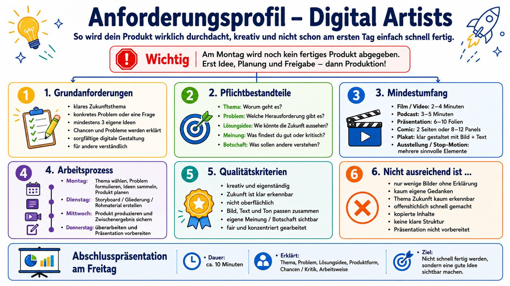
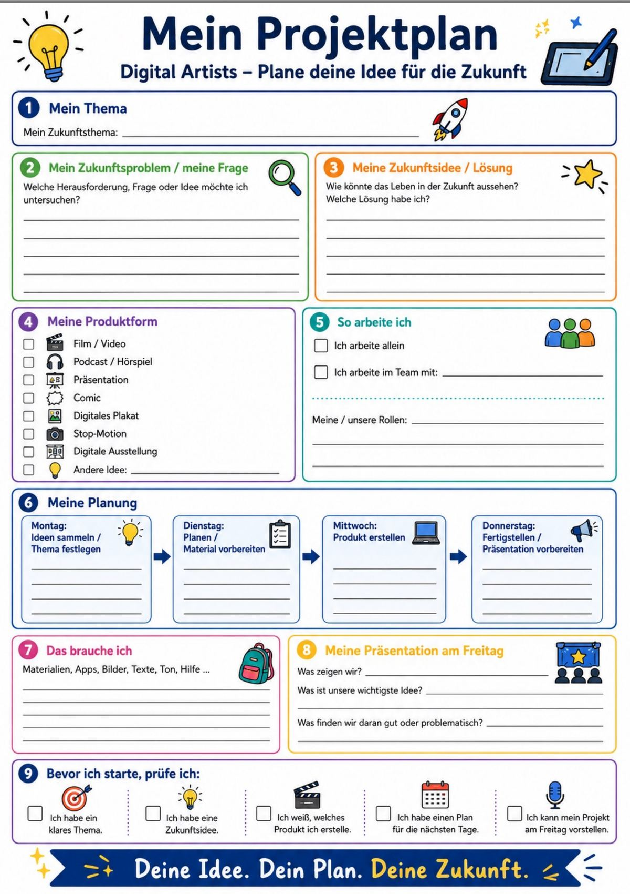
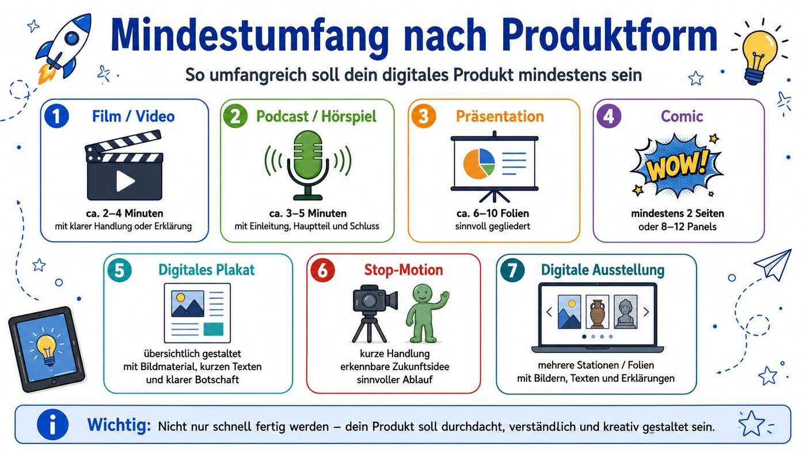
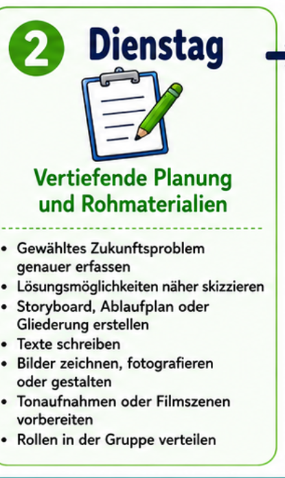

Ein digitales Projekt zu den großen Themen unserer Zukunft
Projektbegleiter-Hinweis: Begrüßung, Tagesziel knapp nennen. Noch keine Apps öffnen lassen. Die Produktion beginnt erst nach Planung und Freigabe.
8:30–8:40 · Impuls I:
Zukunft als Comic
Welche Zukunftsideen, Fragen oder Probleme werden genannt?

Comic-Slideshow
Schaut genau hin: Was wird dargestellt? Welche Probleme oder Chancen für Menschen stecken darin?
Seite 1 / 3
Projektbegleiter-Hinweis: Comic als kurzen visuellen Impuls nutzen. Nicht alles erklären lassen, sondern auf Zukunftsthemen, Probleme und mögliche Produktideen lenken.
8:40–8:45 · Impuls II
Unsere Welt in 50 Jahren?
Welche Ideen, Technologien und Probleme werden in unserer Zukunft eine Rolle spielen?
Projektbegleiter-Hinweis: Video als Einstieg nutzen. Danach keine Inhaltsabfrage im Detail, sondern erste Zukunftsbilder sammeln: Was wirkt spannend, was problematisch, was betrifft Menschen konkret?
8:45–8:55 · Impuls 3
Wie möchtest du im Jahr 2050 leben?
Überlege für dich eine Antwort auf diese Frage. Notiere dir eine positive und eine negative Sache.
02:00
Zeit zum Nachdenken
03:00
Zeit zum Austausch
Projektbegleiter-Hinweis: Nach der Stillphase 2–3 Stimmen einsammeln, ohne die Ideen zu bewerten. Übergang: „Genau aus solchen Fragen entstehen eure Projekte.“
8:55–9:00 · Orientierung
Was machen wir diese Woche?
Ihr entwickelt allein oder im Team ein digitales Produkt zu einer Zukunftsfrage – kreativ, verständlich und eigenständig.
1Gedanken über die Zukunft machen
2Gedanken in einem kreativen Produkt zum Ausdruck bringen
3Produkt am Freitag ausstellen

Projektbegleiter-Hinweis: Infotext nicht komplett vorlesen. Kernauftrag markieren: eigenes Zukunftsbild, digitales Produkt, mehrere Tage konzentrierte Arbeit, Präsentation am Freitag.
Projektbegleiter-Hinweis: Besonders den Unterschied zwischen Dienstag (Vorbereitung/Rohmaterial) und Mittwoch (Produktion) herausstellen.
9:10–9:20 · Qualitätscheck
Mit gutem Plan zum Ziel
Botschaft: Was soll euer Publikum am Freitag verstehen, fühlen oder diskutieren?
Thema: Ist klar erkennbar, mit welchem Zukunftsbereich ihr euch beschäftigt?
Problem: Welche konkrete Frage oder Herausforderung wollt ihr untersuchen?
Ideen: Habt ihr mindestens drei eigene Lösungs- oder Gestaltungsideen gesammelt?
Produkt: Passt die gewählte Form zu eurer Idee und ist sie bis Freitag machbar?
Chance & Kritik: Was wäre an eurer Zukunftsidee hilfreich, und was könnte problematisch sein?
Mängel vermeiden: Was müsst ihr vermeiden, damit euer Produkt nicht oberflächlich, unklar oder schnell gemacht wirkt?

Beispiel Zukunftsthema„Mobilität in der Stadt“: Ältere Menschen ohne Auto kommen schlecht zum Arzt, zum Einkaufen oder zu Freunden.
Projektbegleiter-Hinweis: Die sechs Anforderungen nacheinander anklicken und kurz mit Beispielen füllen lassen: Thema, Problem, Ideen, Produkt, Chance/Kritik, Botschaft.
9:20–9:35 · Themen-Findung
Was begeistert dich?
Überlege in Ruhe, welches Thema dich wirklich interessiert. Siehst du bei deinem Thema Chancen, aber auch Probleme? Wähle ein Thema, bei dem es dir leicht fällt, Lösungsvorschläge für die damit verbundenen Probleme zu finden.
Projektbegleiter-Hinweis: Themen zunächst individuell sichten lassen. Quiz und Themenbild als Impuls nutzen. Ziel: Jede Person markiert ein bis zwei Themen, über die sie gleich mit anderen sprechen möchte.
9:35–9:45 · Austausch zur Themenwahl
Was ist mein Zukunftsthema?
Tauscht euch in kleinen Gruppen aus. Welches Thema spricht dich an? Wer interessiert sich für die gleichen Themen? Ziel ist nicht, sofort „irgendein Thema“ zu wählen, sondern ein Thema zu finden, bei dem ihr Chancen, Probleme und erste Lösungsideen erkennen könnt.
1 · Themen-Kompass
Welche Themen interessieren uns wirklich?
Wo sehen wir ein echtes Problem für Menschen?
Zu welchem Thema fallen uns erste Lösungsideen ein?
2 · Kurzer Austausch
Jede Person nennt einen Favoriten.
Die Gruppe stellt eine Rückfrage.
Am Ende bleiben ein bis zwei starke Themen übrig.
Entscheidungshilfe: Ein gutes Projektthema ist interessant, konkret und problemhaltig. Wenn ihr dazu erklären könnt, wen das Problem betrifft und welche Zukunftsidee helfen könnte, seid ihr auf einem guten Weg.
Projektbegleiter-Hinweis: Austausch bewusst begrenzen. Lernende sollen nicht nur gleiche Interessen finden, sondern prüfen, ob ein Thema genug Substanz hat: Chance, Problem, mögliche Lösung. Noch keine endgültige Produktform festlegen.
9:45–10:15
Pause
Bewegen, trinken, lüften. Danach werden Thema und Team verbindlich festgelegt.
30:00
Pausentimer
Projektbegleiter-Hinweis: Kurz notieren, wer noch ohne Thema, Partner oder klare Richtung ist.
10:15–10:30 · Projektplan besprechen
Erst denken. Dann eintragen.
Besprecht den Projektplan gemeinsam. Noch nicht sofort ausfüllen: Erst müssen Thema, Frage und Produktform wirklich klar sein.
1Was genau ist unser Thema?
2Welche Frage oder welches Problem steckt darin?
3Welches Medium passt zu unserer Idee?
4Am Ende ausfüllen und zum Fotografieren bereitlegen

Projektbegleiter-Hinweis: Diese Folie als gemeinsame Einführung in den Projektplan nutzen. Reihenfolge betonen: 1. Thema präzisieren, 2. konkrete Frage bzw. konkretes Problem formulieren, 3. passendes Medium als Produkt wählen. Erst später ausfüllen lassen; die fertigen Projektpläne werden fotografiert.
10:30–11:30 · Rechercheauftrag
Aus einem Thema wird Wissen.
Jetzt eignet ihr euch aktiv Wissen zu eurem Thema an. Noch kein Produkt erstellen, noch nicht gestalten: Erst verstehen, worum es wirklich geht.
Suchfrage formulieren
Startet nicht mit einem einzelnen Wort. Sucht nach einer konkreten Frage: Wer ist betroffen? Was verändert sich? Warum ist das wichtig?
Quellen gezielt auswählen
Nutzt mindestens zwei seriöse Quellen, zum Beispiel Nachrichtenseiten, Wissenschaft, Behörden, Stiftungen oder gut erklärte Fachbeiträge.
Wichtiges sichern
Notiert Fakten in eigenen Worten. Schreibt dazu, woher die Information stammt und welches Problem für Menschen sichtbar wird.
Frage schärfen
Prüft am Ende: Ist unser Thema genauer geworden? Müssen wir unsere Zukunftsfrage oder unseren Projektplan anpassen?
Arbeitsauftrag
Müssen wir unseren Projektplan nochmals ändern?
Thema nach der Recherche prüfen
Frage oder Problem gegebenenfalls schärfen
Produktidee an das neue Wissen anpassen
Plan bei Bedarf neu gestalten
Projektbegleiter-Hinweis: Deutlich sagen: In dieser Stunde wird noch kein Film, Comic, Plakat oder anderes Produkt erstellt. Die Lernenden sammeln Wissen, prüfen Quellen und schärfen ihre Frage. Bei oberflächlichen Themen nachfragen: „Wen betrifft das konkret?“ und „Was wissen wir darüber wirklich?“
11:30–11:45 · Projektplan aktualisieren
Projektplan aktualisieren
Füllt den Projektplan erst jetzt aus. Achtet darauf, dass Thema, Frage und Produktform zusammenpassen.
Thema und Zukunftsfrage eintragen
Produktform auswählen
Planung für die nächsten Tage notieren
Ausgefüllten Projektplan zum Fotografieren bereitlegen
Projektbegleiter-Hinweis: Jetzt erst ausfüllen lassen. Beim Herumgehen prüfen, ob Thema, Frage und Produktform zusammenpassen. Am Ende die ausgefüllten Projektpläne fotografieren bzw. digital sichern.
11:45–12:00 · Zwischenstandsbericht
Zwischenstandsbericht
Im Plenum gibt jede Gruppe einen kurzen Zwischenstand: Welches Zukunftsthema bearbeitet ihr, und welches konkrete Problem habt ihr darin entdeckt?
1 Methode: 1-Minuten-Zwischenstand
Thema nennen
„Wir bearbeiten das Zukunftsthema …“
Problem erklären
„Das Problem für Menschen ist …“
Frage schärfen
„Daraus könnte unsere Zukunftsfrage werden: …“
Die anderen hören zu und achten darauf: Ist das Problem konkret genug? Betrifft es wirklich Menschen?
So kommt ihr im Plenum dran
1 Gruppe steht kurz auf oder meldet sich.
2 Maximal eine Minute sprechen.
3 Eine Rückfrage oder ein Tipp aus dem Plenum.
4 Danach Projektplan gegebenenfalls nachschärfen.
Wichtig: Es geht noch nicht um ein fertiges Produkt. Erst muss klar sein, welches Thema und welches Problem wirklich bearbeitet werden.
Projektbegleiter-Hinweis: Methode „1-Minuten-Zwischenstand“ nutzen. Jede Gruppe nennt Thema, konkretes Problem und mögliche Zukunftsfrage. Nach jedem Beitrag höchstens eine kurze Rückfrage zulassen, damit die 15 Minuten eingehalten werden. Bei zu allgemeinen Themen nachhaken: „Wen betrifft das?“ und „Was genau ist daran in Zukunft schwierig?“
12:00–12:15 · Produktentscheidung
Welche Form zeigt eure Idee am besten?
Wählt nicht nur nach Lieblings-App. Entscheidet, ob eure Idee am besten durch Handlung, Gespräch, Bildfolge oder Erklärung verständlich wird.
Produktform passt zur Botschaft
Mindestumfang ist realistisch
Technik und Material sind verfügbar

Geeignete iPad-Apps
★
Film / VideoiMovie oder Clips
🎙
Podcast / HörspielGarageBand
▣
PräsentationKeynote
✎
ComicPages oder Canva
C
Plakat / AusstellungCanva, Freeform oder Keynote
🎬
Stop-MotionStop Motion Studio
Projektbegleiter-Hinweis: Bei aufwendigem Film oder Stop-Motion kritisch nach Szenenzahl, Drehorten, Ton und Schnittzeit fragen.
12:15–12:20 · Check-out
Montag geschafft.

Ausblick auf Dienstag
Aus eurer Idee wird ein genauer Plan mit Rohmaterial.
Zukunftsproblem genauer erfassen
Lösungsmöglichkeiten skizzieren
Storyboard, Ablaufplan oder Gliederung erstellen
Texte, Bilder, Tonaufnahmen oder Filmszenen vorbereiten